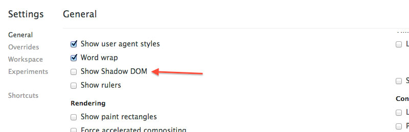
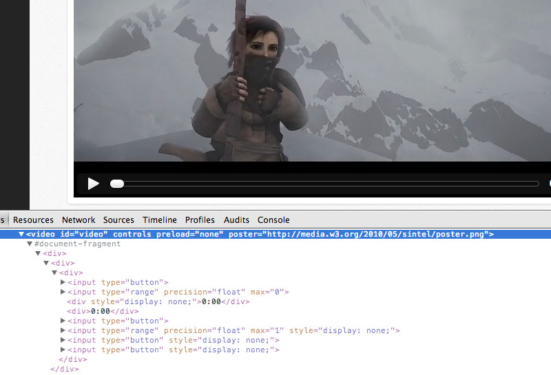
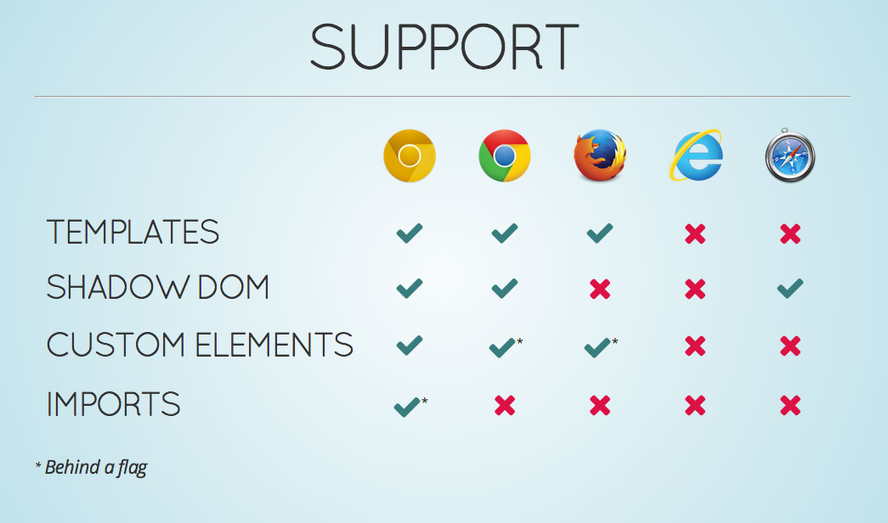

После прочтения статьи What«s coming in ember in 2014 узнал много интересного и нового. Одним из таких открытий стал стандарт Web Components. Ну что — стоит разобраться и с этим вопросом.
Собственно Web Components это не что иное как набор стандартов, позволяющих создавать собственные HTML элементы.
Рассмотрим довольно типичный пример — слайдер, разметка для которого выглядит примерно так
1 | <div id="slider"> |
И не забудем CSS …. хотя не стану приводить здесь 80-строчный кусок кода. Я думаю уже видно насколько горомоздкий получается код.
Что же предлагает нам Web Components? А вот что:
1 | <img-slider> |
Из громоздкой конструкции из HTML+CSS кода мы оставляем только необходимый минимум — только теги которые действительно необходимы. Кто рискнет сказать, что это не красиво?
Но как? Элементарно Ватсон ….
На самом деле каждый компонент состоит из шаблона, JavaScript-а и стилей. Они просто не видны. Это так называемый Shadow DOM.
Чтобы посмотреть его в действии можно включить отображение в настройках Development Tools в Chrome (можно-ли это сделать в других браузерах я не знаю). Вот тут на картинке показано как это сделать. Эти настройки вызываются нажатием на кнопочку в правом нижнем углу инспектора.

Для примера посмотрим на стандартный для HTML5 тег <video>. Вау! Оказывается на самом то деле это веб компонент — и мы можем увидеть весь его Shadow DOM — все его внутренности.

Я удивлён … „о сколько нам открытий чудных …“ как говаривал классик.
Давайте же скорее использовать эту прекрасную технологию
Но тут нас поджидает изрядная ложка дёгтя. Не все так гладко как хотелось бы. Рассмотрим известные проблемы
Поддержка браузерами
С поддержкой этой технологии браузерами пока довольно туго. Ифактически полноценную работу обеспечивает только Chrome.

Эту проблему пытается разрешить Google выпустив библиотеку Polymer. Не буду углубляться в детали этого решения — возможно запилю статью на эту тему. Библиотека делает практически тоже-самое чтои WebComponents, но требует подключения отдельного js-файла. Как-то вот так:
1 | <script src="http://polymer-project.org/polymer.min.js"></script> |
SEO
Непонятно как роботы будут воспринимать и индексировать такие HTML элементы. Обнадёживает, что технологию активно проталкивает именно Google, поэтому вполне вероятно, что в скором времени как минимум этот поисковик научится понимать такую размётку.
Настройка внешнего вида
Все сайты выглядят по разному, поэтому крайне желательно иметь возможность настроить вид любого компонента по своему желанию. К сожалению WebComponets не позволяют такой роскоши и выглядеть будут именно так как прописано у них внутри в их собственных стилях.
Вывод
Довольно интересная и многообещающая технология. Будем ждать развития и одним глазом поглядывать в эту сторону.
Ссылки по теме
В данной статье я не буду вдаваться в нюансы реализации по ссылкам ниже есть более детальные описания. Ищите да обрящете.
Комментарии